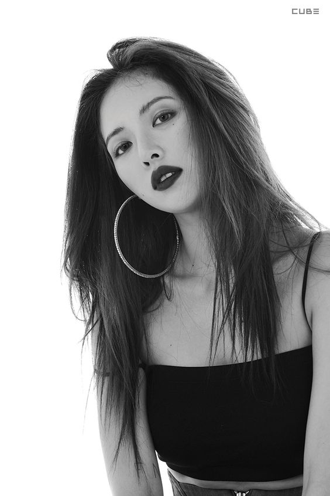
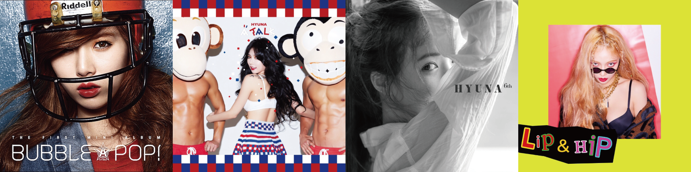
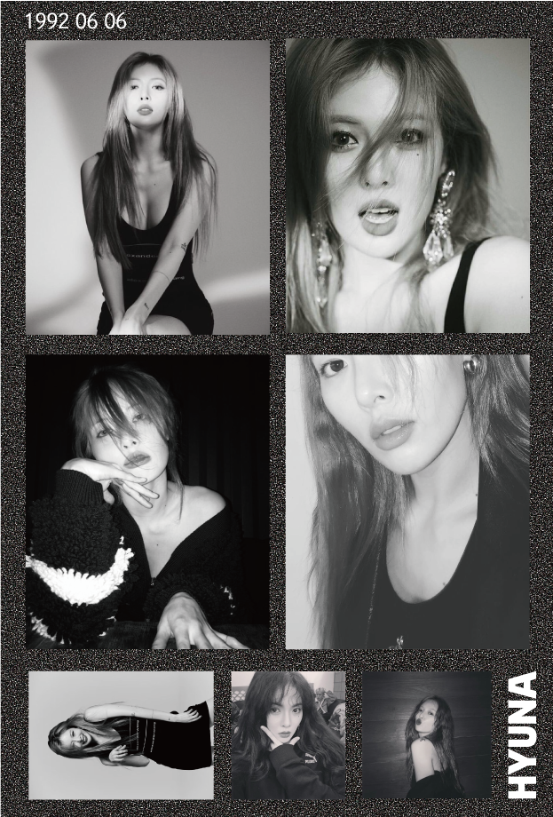
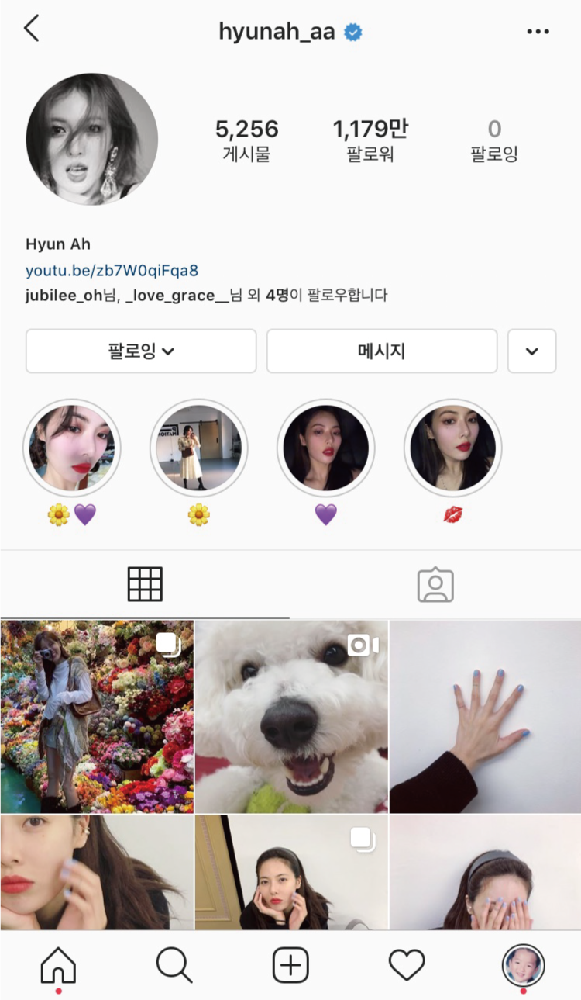
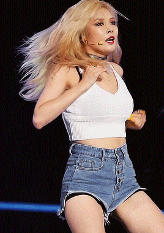

이름 김현아
출생 1992년 6월 6일
신체 164cm 44kg
소속그룹 포미닛, 트러블메이커, 트리플 H
소속사 피네이션
수상 2015년 제24회 하이원 서울가요대상 댄스 퍼포먼스상

데뷔때부터 쉬지않고 셀 수 없이 많은 작업량을 보이면서
꾸준히 앨범을 내고 활동하고 있다.
강렬한 댄스 음악을 주로 타이틀로 삼지만 수록곡들 중에는 잔잔한 느낌의 곡들도 많으니 꼭 들어보길.

날카로운 고양이상의 외모가 특징이다.
빨아들일 것 같은 느낌의 강렬한 비주얼로 센 언니 인상의대표주자라고 볼 수 있다.
순해보이면서도 새침한 인상을 주는 얼굴 덕에 진한 스모키 메이크업부터 과즙상 메이크업, 옅은 메이크업까지 고루고루 잘 어울린다. 또한 화장을 옅게 한 것과 진하게 한 얼굴이 상당히 다르며 민낯도 굉장히 예쁘다.

많은 팔로워를 보유하고 있고 잦은 업로드로 팬들과 소통하고 있다.

다른 아이돌이나 선배 가수들이 꼽은 춤신춤왕 김현아.
일단 보면 한번만 볼 수 없고, 보는 순간 코피터진다. 퐝!(⁎⁍̴̆Ɛ⁍̴̆⁎)